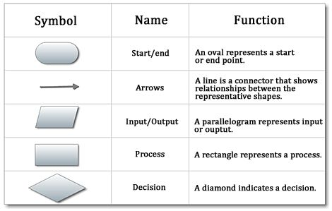

Part 1: Algorithm and Flowchart
Algorithms and flowcharts are two different ways of presenting the process of solving a problem. Algorithms consist of steps for solving a particular problem, while in flowcharts, those steps are usually displayed in shapes and process boxes with arrows. So flowcharts can be used for presenting algorithms. Algorithms are step by step instructions defined to solve a particular problem. Flowchart is a diagrammatic representation of the algorithm to solve a problem. Flowchart is easier to understand. This page will introduce some examples of algorithm and flowcharts.
Part 2: Rules of Drawing Flowcharts for Algorithms
Flowcharts usually consist of basic symbols and shapes that have a specific representation. The symbols make the chart more meaningful and easy to understand.
Some of the most standard symbols include shapes like a rectangle representing an operation/process/computation, a parallelogram showing input and output of data, a cylinder/oval indicating the start/end, arrow lines to indicate the flow of the flowchart, while a diamond/rhombus represents a decision with one arrow coming in and two arrows going out ( one for Yes and one for No)
However, knowing these symbols well and using them in a flowchart involves critical thinking. Here are some basic rules that need to be considered while drawing a flowchart. - All the boxes and shapes in a flowchart should be connected with arrows to indicate a logical order and make it easy to follow.
- Make sure the flow direction is consistent and not ambiguous. The flow charts always flow from either left to right or top to bottom.
- Every chart will begin with a Start box and end with a Terminal/End box, with the latter only having one flow line associated with it.
- All the shapes, symbols, and lines should be consistent. You can also add a symbol key to make it easier to follow the chart.
Part 3: Algorithm and Flowchart Examples
Example 1: Determine and Output Whether Number N is Even or Odd
- Step 1: Read number N.
- Step 2: Set remainder as N modulo 2.( N modulo 2 means when N is divided by 2,what is the remainder?)
- Step 3: If the remainder is equal to 0 then number N is even, else number N is odd.
- Step 4: Print output.
Example 2: Calculate the Interest of a Bank Deposit
- Step 1: Read amount.
- Step 2: Read years.
- Step 3: Read rate.
- Step 4: Calculate the interest with the formula "Interest=Amount*Years*Rate/100.
- Step 5: Print interest.
Example 3: Determine Whether a Temperature is Below or Above the Freezing Point
- Step 1: Input temperature in Farenheit.
- Step 2: If it is less than 32, then print "below freezing point", otherwise print "above freezing point".